가스기사 (2006-05-14 기출문제)
1과목: 가스유체역학
1. 수압관을 거쳐 노즐에서 분류된 물줄기가 회전자 둘레의 버킷에 충돌하여 회전력을 전달하는 수차는?
- 펠톤수차
- 프란시스수차
- 중력수차
- 반동수차
(정답률: 46%)

2. 다단펌프에서 회전차의 수를 Z 개라 하면 회전차의 1개당의 비속도는 펌프전 비속도의 몇 배가 되는가?
- Z2.5
- Z2.75
- Z1.25
- Z1.33
(정답률: 60%)
3. 유체에 잠겨 있는 곡면에 작용하는 전압력의 수평분력에 대한 설명으로 가장 올바른 것은?
- 전압력의 수평성분 방향에 수직인 연직면에 투영한 투영면의 압력중심의 압력과 투영면을 곱한 값과 같다.
- 전압력의 수평성분 방향에 수직인 연직면에 투영한 투영면의 도상의 압력과 곡면의 면적을 곱한 값과 같다.
- 수평면에 투영한 투영면에 작용하는 전압력과 같다.
- 전압력의 수평성분 방향에 수직인 연직면에 투영한 투영면의 도심의 압력과 투영면의 면적을 곱한 값과 같다.
(정답률: 알수없음)
4. 내경이 1m인 배관을 통해 부탄이 펌핑되고 있다. 25℃의 등온흐름 조건에서 음속은 몇 m/s 인가?
- 329.7
- 318.4
- 277.2
- 206.7
(정답률: 9%)
5. 내경 100mm인 수평 원관으로 1500m 떨어진 곳에 원유를 0.12m3/min 의 유량으로 수송시 손실수두(H)는? (단, 정성계수 μ= 0.02Ｎ·s/m2, 비중 s = 0.86 이다.)
- 2.9m
- 3.7m
- 4.5m
- 5.3m
(정답률: 알수없음)
6. 압력을 P, 온도를 T, 밀도를 ρ, Mach 수를 M이라고할 때 충격파 전, 후 상태량의 관계식으로 옳은 것은?
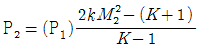
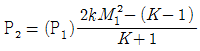
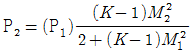
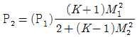
(정답률: 알수없음)
7. 유선(stream line)에 대한 설명 중 가장 거리가 먼 내용은?
- 유체흐름에 있어서 모든 점에서 유체흐름의 속도 벡터의 방향을 갖는 연속적인 가상곡선이다.
- 유체흐름 중의 한 입자가 지나간 궤적을 말한다. 즉, 유선을 가로 지르는 흐름에 관한 것이다.
- X, Y, Z에 대한 속도분포를 각각 U, V, W라고 할때 유선의 미분방적식은
 이다.
이다. - 정상유동에서 유선과 유적선은 일치한다.
(정답률: 60%)
8. 상임계 레이놀즈수란?
- 층류에서 난류로 변하는 레이놀즈수
- 난류에서 층류로 변하는 레이놀즈수
- 등류에서 비등류로 변하는 레이놀즈수
- 비등류에서 등류로 변하는 레이놀즈수
(정답률: 알수없음)
9. 면적에 변하는 수축통로에서 등에너지－등엔트로피 유동에 대한 설명이다. 다음 중 옳은 것은?
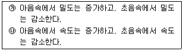
- ㉮ 만 옳다.
- ㉯ 만 옳다.
- ㉮, ㉯ 모두 옳다.
- 모두 틀리다.
(정답률: 60%)
10. 비리알 방정식(Virial equation)은 무엇에 관한 것인가?
- 유체의 흐름
- 유체의 점성
- 유체의 수송
- 유체의 상태
(정답률: 24%)
11. 실험실의 풍동(draft)에서 20℃ 의 공기로 실험을 할 때 마하각이 30°이면 풍속은 몇 m/s 가 되는가? (단, 공기의 비열비 k = 1.4 이다.)
- 278
- 364
- 512
- 686
(정답률: 29%)
12. 다음 중 압력의 SI 단위는?
- kgf/m3
- N/m2
- kg/m
- kgㆍm
(정답률: 알수없음)
13. 무차원 파라미터를 물리적으로 해석한 것 중 옳지 않은 것은?
- 마하수는 유속과 음속의 비이다.
- 레이놀즈수는 관성력과 점성력의 비이다.
- 압력계수는 압력과 표면장력의 비이다.
- 프란틀수는 관성력과 중력의 비이다.
(정답률: 알수없음)
14. 가스의 임계압력(P∗)을 바르게 나타낸 것은? (단, 비열비는 k, 정체압력은 Po이다.)
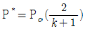
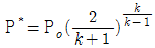
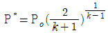
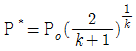
(정답률: 75%)
15. 지름이 25mm인 물방울의 내부 초과 압력이 50Ｎ/m2일 때 표면장력은 몇 Ｎ/m 인가?
- 0.3125
- 0.4125
- 0.525
- 0.625
(정답률: 8%)
16. 도플러효과(doppler effect)를 이용한 유량계는?
- 에뉴바 유량계
- 초음파 유량계
- 오벌 유량계
- 열선 유량계
(정답률: 70%)
17. 물이나 다른 액체를 넣은 타원형 용기를 회전하여 유독성 기체를 수송하는데 사용하는 수송장치는 무엇인가?
- 터보 송풍기
- 로브 펌프
- 나쉬펌프
- 프로펠러 펌프
(정답률: 알수없음)
18. 어떤 유체의 액면하 10m인 지점에 있는 물고기가 받는 압력이 2.16kgf/cm2일 때 이 액체의 비중량은 몇 kgf/m3인가?
- 2,160
- 216
- 21.6
- 0.216
(정답률: 65%)
19. 밀도가 0.5g/cm2, 점도 1cp인 비압축성 유체가 5 ㎝/s의 유속으로 마찰계수 0.016인 원관을 층류로 통과할 때 이 원관의 내경은 몇 ㎝ 인가?
- 2.5
- 4.0
- 5.5
- 1.7
(정답률: 47%)
20. 층류 속도 분포를 Hagen-Poiseuille 유동이라고 한다. 이 흐름에서 일정한 유량의 물이 원관에서 흐를 때 지름을 2배로 하면 손실 수두는 몇 배가 되는가?
- 4
- 16
- 1/4
- 1/16
(정답률: 알수없음)
2과목: 연소공학
21. 공기 중 연소범위(폭발한계)가 가장 좁은 가스는?
- CO
- H2
- C2H2
- C3H8
(정답률: 60%)
22. 1kg 의 물이 1기압에서 정압 과정으로 0℃ 로부터 100℃ 로 되었다. 평균 열용량 Cp = kcal/kgㆍＫ 이면 엔트로피 변화량은 몇 kcal/Ｋ 인가?
- 0.133
- 0.226
- 0.312
- 0.427
(정답률: 알수없음)
23. 체적 2m 의 용기 내에서 압력 0.4MPa, 온도 50℃인 혼합기체의 체적분율이 메탄(CH4)5%, 수소(H2) 40%, 질소(N2) 25%이다. 이 혼합기체의 질량은 몇 kg인가?
- 2
- 3
- 4
- 5
(정답률: 30%)
24. 기체연료의 연소형태는 다음 중 어떤 것인가?
- 확산연소
- 액면연소
- 증발연소
- 분무연소
(정답률: 알수없음)
25. 다음 무차원수 중 열확산계수에 대한 운동량확산 계수의 비에 해당하는 것은?
- Lewis number
- Nusslt number
- Grashof number
- Prandtl number
(정답률: 54%)
26. 등압 하에서 증기의 증발에 대한 설명 중 가장 거리가 먼 내용은?
- 포화액선과 포화증기선의 구분이 없는 것을 임계점이라 한다.
- 과열 증기는 건포화 증기보다 온도가 높다.
- 과열 증기는 건포화 증기를 가열한 것이다.
- 건포화 증기는 습포화 증기보다 온도가 낮다.
(정답률: 알수없음)
27. 표준상태에서 프로판(C3H8) 1kg 을 완전 연소시키는데 몇 Nm3의 공기가 필요한가?
- 10.6
- 12.1
- 14.0
- 16.5
(정답률: 알수없음)
28. 연소에 대한 설명 중 옳지 않은 것은?
- 연료가 한번 착화하면 고온도로 되어 빠른 속도로 연소한다.
- 환원반응이란 공기의 과잉 상태에서 생기는 것으로 이 때의 화염을 환원염이라 한다.
- 고체, 액체 연료는 고온의 가스분위기 중에서 먼저 가스화가 일어난다.
- 연소에 있어서는 산화 반응뿐만 아니라 열분해반응도 일어난다.
(정답률: 64%)
29. 탄소 1kg을 이론공기량으로 완전 연소시켰을 때 발생되는 연소가스량은 몇 Nm3인가?
- 22.4
- 1.867
- 8.889
- 11.2
(정답률: 20%)
30. 800℃의 고열원과 250℃의 저열원 사이에서 작동하는 열기관의 최대효율은 얼마인가?
- 31.3%
- 45.5%
- 51.3%
- 68.8%
(정답률: 50%)
31. 다음 보기의 열역학에 관한 설명 중 가장 올바른 것은?
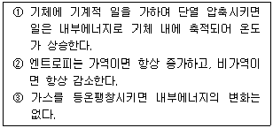
- ① 만 옳다.
- ② 만 옳다.
- ①, ③ 만 옳다.
- ②, ③ 만 옳다.
(정답률: 55%)
32. 소화약제로서 물이 가지는 성질에 대한 설명 중 옳지 않은 것은?
- 기화 잠열이 작다.
- 비열이 크다.
- 물은 극성공유결합을 하고 있다.
- 가장 주된 소화효과는 냉각소화이다.
(정답률: 46%)
33. Propane 가스의 연소에 의한 발열량이 11,780kcal/g이고, 연소할 때 발생된 수증기의 잠열량이 1,900kcal/g이라면 Propane 가스의 연소효율은? (단, Propane 가스의 진발열량은 11,500kcal/kg이다.)
- 0.778
- 0.859
- 1.120
- 1.285
(정답률: 50%)
34. 일정한 압력(P=2,000kpa)에서 기체가 0.1m3에서 0.6m3로 팽창하였다. 이 동안 기체의 내부에너지는 150 KJ 증가 하였다면, 기체에 가해진 열량은 얼마인가?
- 250 KJ
- 350 KJ
- 775 KJ
- 1,150 KJ
(정답률: 알수없음)
35. 그림은 층류예혼합화염의 구조도이다. 온도곡선의 변곡점인 Ｔ1를 무엇이라 하는가?
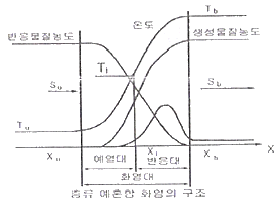
- 착화온도
- 반잰온도
- 화염평균온도
- 예혼합화염온도
(정답률: 알수없음)
36. 50℃, 이상기체 1kgㆍmole 을 1/2로 압축할 경우, 단열압축에서 소요되는 절대 일량은 몇 ＫＪ 인가? (단, 단열지수는 1.4이다.)
- 1,074
- 2,145
- 6,716
- 11,004
(정답률: 30%)
37. 액화석유가스(ＬＰＧ)의 특성에 대한 설명 중 가장 거리가 먼 내용은?
- 냄새가 거의 나지 않는다.
- 무색 투명하고 알코올 및 에테르에 잘 용해된다.
- 물에 잘 녹으며 동.식물유 또는 천연고무를 잘 녹인다.
- 액체상태의 ＬＰ가스의 비중은 공기보다 무겁다.
(정답률: 알수없음)
38. 연료를 완전 연소시키기 위한 조건이 아닌 것은?
- 연료와 공기의 혼합촉진
- 연료에 충분한 공기를 공급
- 노내 온도를 낮게 유지
- 연료나 공기온도를 높게 유지
(정답률: 84%)
39. 폭굉(detonation)에서 유도거리가 짧아질 수 있는 경우가 아닌 것은?
- 관경이 굵을 수록
- 관속에 방해물이 있을 수록
- 압력이 높을 수록
- 점화원의 에너지가 클수록
(정답률: 알수없음)
40. 기체연료의 연소에서 화염 전파의 속도에 영향을 가장 적게 주는 요인은?
- 가연성가스와 공기와의 혼합비
- 온도
- 압력
- 가스의 온도
(정답률: 73%)
3과목: 가스설비
41. 고압가스 안전밸브 설치 위치에 대한 설명 중 옳지 않은 것은?
- 압력용기의 기상부 또는 상부
- 다단 압축기 등 압력을 상승시키는 기기의 경우 압축기의 최후단
- 조정기 등 강압을 하는 설비는 조정기 전ㆍ후단(상ㆍ하류)
- 밸브 등으로 차단되는 부분으로 가열ㆍ반응 등에 의하여 압력상승이 예상되는 부분
(정답률: 40%)
42. 다음은 내면에 압력을 받는 압력용기의 최소두께를 계산하기 위한 식이다. 식의 의미로서 틀린 것은?
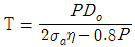
- P : 최소 충전압력
- σa : 재료의 허용 인장응력
- η : 용접이음매 효율
- Do : 관의 바깥지름
(정답률: 알수없음)
43. 가스액화분리장치 중 저온에서 원료가스를 분리ㆍ정제하는 것을 무엇이라 하는가?
- 한냉발생장치
- 정류장치
- 불순물제거장치
- 접촉분해장치
(정답률: 알수없음)
44. 산소압축기의 내부윤할제로 적합한 것은?
- 진한황산
- 식물성 유
- 물 또는 10% 이하의 묽은 글리세린 수용액
- 진한염산
(정답률: 55%)
45. 가스제조소에서 제조과정 중 발생할 수 있는 대기오염 물질인 황화합물(ＳＯX)로부터 대기오염을 방지하기 위한 방법으로 가장 거리가 먼 것은?
- 고연돌화에 의한 확산
- 2단 연소법
- 연료의 저유황화
- 배연탈황법
(정답률: 24%)
46. 터빈펌프에서 속도에너지를 압력에너지로 변환하는 역할을 하는 것은?
- 와실(whirl pool chamber)
- 안내깃(guide vane)
- 와류실(volute casing)
- 회전차(impeller)
(정답률: 67%)
47. 수소 또는 수소를 포함하는 가스를 취급하는 반응 장치의 재료로 탄소강을 사용할 때 예상될 수 있는 문제점에 대한 해결방안을 제시하였다. 다음 설명 중 가장 거리가 먼 내용은?
- 수소 조장 균열의 방지법은 용접재료를 잘 건조시키고, 용접 후 서냉 및 후열을 통 한 용접금속 중의 수소를 제거하는 탈수소처리를 한다.
- 수소 침식방지를 위해 내수소침식용 강인 Cr 이나 Mo을 첨가한 강 중 탄소를 안정화시킨 강인 KSD 3543(보일러 및 압력용기용 Cr, Mo강판)을 사용한다.
- 수소취성 균열을 방지하기 위해서는 18-8 오스테나이트 스테인레스를 사용하고 탄소강의 경도를 높이기 위해 경도가 높은 용접봉을 선택하고 용접 후 열처리를 한다.
- 수소 유기 균열을 방지하는 방법은 강 중의 유황분이 적게 되도록 칼슘을 첨가하여 황을 구상화시키며, 근본적으로는 황화합물이 많은 환경은 라이닝 등으로 설비를 보호한다.
(정답률: 47%)
48. 산소·아세틸렌 및 수소의 품질검사에 대한 설명으로 옳지 않은 것은?
- 검사는 1일 1회 이상 가스 제조장에서 실시할 것
- 산소는 동·암모니아시약을 사용한 오르잣드법에 의한 시험결과 순도가 98% 이상일 것
- 아세틸렌은 발연황산시약을 사용한 오르잣드법에 의한 시험에서 순도가 98% 이상일 것
- 수소는 피로가롤 또는 하이드로썰파이드 시약을 사용한 오르잣드법에 의한 시험에서 순도가 98.5% 이상일 것
(정답률: 알수없음)
49. 다음 중 가연성이면서 유독한 가스는?
- F2
- NH3
- HCl
- COCl2
(정답률: 59%)
50. 액화석유가스 사용시설에 대한 설명 중 가장 거리가 먼 내용은?
- 저장설비로부터 중간밸브까지의 배관은 강관·동관 또는 금속플렉시블 호스로 해야 한다.
- 건축물 내의 배관은 매입해야 한다.
- 저장설비는 화기를 취급하는 장소를 피하여 옥외에 두어야 한다.
- 호스의 길이는 연소기까지 3m 이내로 해야 한다.
(정답률: 알수없음)
51. 증기압축식 냉동기에서 냉매의 순환 경로로 옳은 것은?
- 증발기－응축기－팽창밸브－압축기
- 압축기－증발기－응축기－팽창밸브
- 압축기－응축기－팽창밸브－증발기
- 압축기－응축기－증발기－팽창밸브
(정답률: 65%)
52. 대량의 LPG 공급을 위하여 강제 기화기를 사용할 경우의 특징에 대한 설명 중 옳지 않은 것은?
- 한냉시에도 충분히 기화된다.
- 공급가스의 조성이 일정하다.
- 기화량의 가감이 가능하다.
- 가스의 발열량을 높일 수 있다.
(정답률: 알수없음)
53. 탱크로리로부터 저장 탱크에 LP가스를 이송 시 압축기를 이용할 경우의 장점이 아닌 것은?
- 펌프에 비해 충전 시간이 짧다.
- 베이퍼록 현상이 없다.
- 잔류가스 회수가 가능하다.
- 저온에서도 재액화현상이 일어나지 않는다.
(정답률: 알수없음)
54. 원유에서의 대체천연가스(SNG) 프로세스 중 유동식 수첨분해법에 해당하는 것은?
- 원유를 750℃에서 수소와 반응시켜 메탄 성분을 많게 하는 방법이다.
- 원유를 750℃에서 산소와 수증기를 반응시켜 메탄 성분을 많게 하는 방법이다.
- 원유를 450℃에서 수소 및 수증기를 반응시켜 메탄성분을 많게 하는 방법이다.
- 원유를 부분연소시켜 메탄을 만드는 방법이다.
(정답률: 17%)
55. 액화산소용기에 액화산소가 50kg이 충전되어 있다. 이 때 용기 외부에서 액화산소에 대하여 5kcal/h의 열량이 주어진다면 액화산소가 증발하여 그 양이 반으로 감소되는데 걸리는 시간은? (단, 산소의 증발잠열은 1.6kcal/mol 이다.)
- 2.5시간
- 25시간
- 125시간
- 250시간
(정답률: 알수없음)
56. 도시가스 홀더(gas holder)의 기능에 대한 설명으로 가장 거리가 먼 것은?
- 가스 수요의 시간적 변화에 대해 안정적인 공급이 가능하다.
- 조성이 다른 가스를 혼합하여 가스의 성분, 열량, 연소성을 균일화한다.
- 가스 홀더를 설치함으로 도시가스 폭발을 방지할 수 있다.
- 가스 홀더를 소비지역 가까이 둠으로써 가스의 최대사용시 제조소에서 배관 수송량을 안정하게 할 수 있다.
(정답률: 알수없음)
57. 피셔(fisher)식 정압기의 2차 압력의 이상 저하원인으로 가장 거리가 먼 것은?
- 정압기 능력 부족
- 필터 먼지류의 막힘
- 파일럿 오리피스의 녹 막힘
- 가스 중 수분의 동결
(정답률: 20%)
58. 물 27kg을 전기분해하여 수소가스를 제조하여 내용적 40L의 용기에다 0℃, 150kg/cm2로 충전 한다면 필요한 용기는 최소 몇 개인가?
- 3개
- 6개
- 9개
- 12개
(정답률: 알수없음)
59. 다음 중 일반적인 냄새가 나는 물질(부취제)의 주입방법이 아닌 것은?
- 적하식
- 증기주입식
- 고압분사식
- 회전식
(정답률: 54%)
60. 아세틸렌 제조공정에서 반드시 필요하지 않는 장치는?
- 저압 건조기
- 유분리기
- 역화방지기
- ＣＯ2흡수기
(정답률: 39%)
4과목: 가스안전관리
61. 고압가스를 운반하는 차량의 경계표지에 대한 기준 중 옳지 않은 것은?
- 경계표지는 차량의 앞뒤에서 명확하게 볼 수 있도록 “위험고압가스”라 표시한다.
- 삼각기는 운전석 외부의 보기 쉬운 곳에 게시한
- 다만, RTC의 경우는 좌우에서 볼 수 있도록 하여야 한다. 다. 경계표지 크기의 가로 치수는 차체 폭의 20% 이상, 세로 치수는 가로치수의 30% 이상으로 된 직사각형으로 한다.
- 경계표지에 사용되는 문자는 KS M 5334(발광도료) 또는 KS A 3507(보안용 반사시트 및 테이프)에 따라 사용한다.
(정답률: 50%)
62. 액화가스를 충전하는 차량의 탱크 내부에 액면 요동 방지를 위하여 설치하는 것은?
- 콕크
- 긴급 탈압밸브
- 방파판
- 충전판
(정답률: 59%)
63. 고압가스 냉동제조시설에서 냉동능력 20ton 이상의 냉동설비 압력계의 설치기준으로 옳지 않은 것은?
- 냉매설비에는 압축기의 토출압력 및 흡입압력을 표시하는 압력계를 보기 좋은 곳에 설치
- 강제윤활방식인 경우에는 윤활압력 표시 압력계 설치
- 강제윤활방식인 것은 윤활유 압력에 대한 보호장치가 설치되어 있는 경우 압력게 설치
- 발생기에는 냉매가스의 압력을 표시하는 압력계설치
(정답률: 60%)
64. 특정설비에 설치하는 플랜지이음매로 허브플랜지를 사용하지 않아도 되는 것은?
- 설계압력이 2.5mpa인 특정설비
- 설계압력이 3.0mpa인 특정설비
- 설계압력이 2.0mpa이고 플랜지의 호칭 내경이 260mm인 특정설비
- 설계압력이 1.0mpa이고 플랜지의 호칭 내경이 300mm인 특정설비
(정답률: 알수없음)
65. LPG사용 시설 중 저장설비와 연소기입구 사이에 설치되어 있는 것은?
- 역류방지장치
- 폭발방지장치
- 중간밸브
- 기화기
(정답률: 알수없음)
66. 가스용품의 자체검사에 대한 설명 중 옳지 않은 것은?
- 가스용품에 제조자의 자체검사표시를 하고 검사기록을 5년간 보존하여야 한다.
- 가스용품의 종류마다 1개씩 연 1회 이상 정밀검사 항목에의 적합 여부에 대하여 검사한다.
- 모든 가스용품에 대하여 제품검사 항목의 적합 여부에 대하여 검사한다.
- 자체검사결과 부적합사항이 있을 경우 즉시 개선 조치 하여야 한다.
(정답률: 알수없음)
67. 산소 및 독성가스의 운반 중 재해발생 또는 확대를 방지하기 위한 조치 사항으로 가장 거리가 먼 내용은?
- 운반 중 가스누출이 있는 경우 그 누출부분의 확인 및 수리를 할 것.
- 가스누출부분의 수리가 불가능한 경우 부근의 화기를 없앨 것.
- 화재가 발생한 경우 소화하지 말고 즉시 대피할 것.
- 자체검사결과 부적합사항이 있을 경우 즉시 개선 조치 하여야 한다.
(정답률: 알수없음)
68. 다음 가스가 공기 중에 누출되고 있다고 할 경우가장 빨리 폭발할 수 있는 가스는? (단, 점화원 및 주위환경 등 모든 조건은 동일하다고 가정한다.)
- H2
- CH4
- C3H8
- C4H10
(정답률: 40%)
69. 가스용품제조시설의 안전관리자가 하여야 하는 임무에 해당되지 않은 것은?
- 안전유지 및 검사기록의 작성 보존
- 가스용품의 제조공정 관리
- 공급자 의무이행 확인
- 가스시설의 공급량 파악
(정답률: 28%)
70. 아세틸렌을 2.5Mpa로 압축 시 희석제로 적당하지 않은 것은?
- 질소
- 수소
- 메탄
- 일산화탄소
(정답률: 70%)
71. 가스난로를 사용하다가 부주의로 점화되지 않은 상태에서 콕을 전부 열었다. 이 때 노즐로부터 분출되는 생 가스의 양은 약 몇 m3/h 인가? (단, 노즐의 지름 D = 15mm, 가스의 비중 d = 0.5, 유량계수 K = 0.8, 가스압력은 P=200mmH2O로 한다.)
- 0.1m3/h
- 0.2m3/h
- 0.3m3/h
- 0.4m3/h
(정답률: 16%)
72. 고압가스특정제조시설의 내부반응 감시장치에 속하지 않는 것은?
- 온도감시장치
- 압력감시장치
- 유량감시장치
- 농도감시장치
(정답률: 85%)
73. 압축 천연가스 자동차 연료용 이음매 없는 용기의 최고 충전압력으로 맞는 것은?
- 36MPa
- 26MPa
- 16MPa
- 6MPa
(정답률: 50%)
74. 내용적 35L에 압력 20kg/cm2의 수압을 걸었더니 내용적이 35.35L 로 되었다. 이 때 용기의 항구 증가율은 얼마인가? (단, 대기압으로 하였더니 35.04L 이었다.)
- 7.4%
- 8.8%
- 11.4%
- 12.4%
(정답률: 43%)
75. 산소용기에 압축산소가 35℃에서 150kg/cm2·g 로 충전되어 있다. 용기온도가 0℃로 저하하면 압력은 약몇 kg/cm2·g 가 되는가? (단, 산소는 이상기체로 가정한다.)
- 103kg/cm2·g
- 112kg/cm2·g
- 124kg/cm2·g
- 133kg/cm2·g
(정답률: 59%)
76. 액화석유 가스를 차량에 고정된 내용적 V 리터인 탱크에 충전할 때 충전량을 구할 수 있는 적합한 식은? (단, G : 액화석유가스의 저장능력(kg), P : 최고충전압력, d : 비중 C : 기체의 종류에 따른 정수이다.)
- G=V/C
- G=C(V+1)
- G=0.9dV
- G=(10P+1)V
(정답률: 20%)
77. 안전성평가기법에 대한 설명 중 옳지 않은 것은?
- 체크리스트법기법이라 함은 설비의 오류, 결함상태, 위험상황, 등을 목록화한 형태로 작성하여 경험적으로 비교함으로써 위험성을 정성적으로 파악하는 기법이다.
- 작업자실수분석기법이라 함은 사고를 일으키는 장치의 이상이나 운전자 실수의 조합을 연역적으로 분석하는 정량적 기법이다.
- 사건수분석기법이라 함은 초기사건으로 알려진 특정한 장치의 이상이나 운전자의 실수로부터 발생되는 잠재적인 사고결과를 평가하는 정량적 기법이다.
- 위험과운전분석기법이라 함은 공정에 존재하는 위험요소들과 공정의 효율을 떨어뜨릴 수 있는 운전상의 문제점을 찾아내어 그 원인을 제거하는 정성적인 기법이다.
(정답률: 37%)
78. 염소가스에 의해 재해가 발생하였을 때 염소가스를 흡수하는 흡수제로 가장 적절한 것은?
- 암모니아용액
- 염화제2철용액
- 소석회수용액
- 금속산화물
(정답률: 알수없음)
79. 용기의 신규검사에 대한 기준으로 옳지 않은 것은?
- 내용적이 1리터 이하의 이음매 없는 용기 중 에어졸 제조용으로 제조한 것은 접합 또는 납붙임용기의 검사항목 및 검사기준에 의하여 검사한다.
- 파열시험을 한 용기는 인장시험 및 충격시험을 생략할 수 있다.
- 이음매 없는 용기는 그 두께가 13mm 이상의 것은 충격시험을 한다.
- 압궤시험을 실시하기가 부적당한 용기는 용기에서 채취한 시험편에 대한 굽힘시험으로 이에 갈음할 수 있다.
(정답률: 60%)
80. 도시가스제조공정에서 원료 중에 함유되어 있는 황은 가스중에 불순물로서 혼입된다. 혼입된 황 성분을 제거하는 방법인 습식탈황법에서 사용하는 흡수제는?
- 실리카겔
- 산화철(Fe2O3·3H2O)
- 암모니아수(NH4OH)
- 염화칼슘(CaCl2)
(정답률: 알수없음)
5과목: 가스계측기기
81. 다음 중 일반적으로 측온저항체로 사용하지 않는 것은?
- Pt
- Ni
- Pb
- Cu
(정답률: 17%)
82. 안전등형 가스검출기에서 청색 불꽃의 길이로 농도를 알 수 있는 가스는?
- 수소
- 메탄
- 프로판
- 산소
(정답률: 54%)
83. 헴펠(HemPel)법으로 가스분석을 할 경우 분석가스와 흡수액이 잘못 연결된 것은?
- CO2 - 수산화칼륨 용액
- O2 - 알카리성 피로카롤 용액
- C2H2 - 무수황산 25%를 포함한 발연 황산
- CO - 염화암모늄 용액
(정답률: 알수없음)
84. 다음의 가스미터 중 실측식 가스미터는?
- 루츠식
- 벤츄리식
- 터빈식
- 오리피스식
(정답률: 70%)
85. 수분흡수법에 의한 습도측정에 사용되는 흡수제로서 가장 관계가 먼 것은?
- 염화칼슘
- 황산
- 오산화인
- 과망간산 칼륨
(정답률: 40%)
86. 전자유량계의 특징에 대한 설명 중 가장 거리가 먼 내용은?
- 액체의 온도, 압력, 밀도, 점도의 영향을 거의 받지 않으며 체적유량의 측정이 가능하다.
- 측정관 내에 장애물이 없으며, 압력손실이 거의 없다.
- 유량계 출력이 유량에 비례한다.
- 기체의 유량측정이 가능하다.
(정답률: 알수없음)
87. 가스계량기(30m3/h 미만) 설치 시 일반적인 주의사항으로 가장 거리가 먼 것은?
- 검침을 고려한 장소에 설치하여야 한다.
- 화기와 1m 이상의 우회거리를 유지하여 설치한다.
- 바닥으로부터 1.6m에서 2m 이내에 수직ㆍ수평으로 설치한다.
- 전기계량기와는 60㎝ 이상의 거리를 유지하여 설치하여야 한다.
(정답률: 60%)
88. 습식가스미터기는 주로 표준계량에 사용된다. 이 계기는 어떤 type의 측정기인가?
- Drum type
- Orifice type
- Oval type
- Venturi type
(정답률: 64%)
89. Ni, Mn, CO 등의 금속산화물을 소결시켜 만든 반도체로서 미세한 온도 측정에 용이한 온도계는?
- 서미스터저항체온도계
- 바이메탈온도계
- 써모컬러온도계
- 써모커플온도계
(정답률: 82%)
90. 유독가스인 시안화수소의 누출탐지에 사용되는 시험지는?
- 연당지
- 초산벤지딘지
- 하리슨씨 시험지
- 염화제1구리 착염지
(정답률: 65%)
91. MAX 1.5[m3/h], 0.5[L/rev]라 표시되어 있는 가스미터가 1시간당 400회전 하였다면 가스유량은?
- 0.75 m3/h
- 200 L/h
- 1 m3/h
- 400 L/h
(정답률: 알수없음)
92. 증기식 가스보일러의 자동연소제어에서 제어량에 해당되는 것은?
- 연료량
- 증기압력
- 연소가스량
- 공기량
(정답률: 알수없음)
93. 열전대온도계는 2종류의 금속선을 접속하여 하나의 회로를 만들어 2개의 접점에 온도차를 부여하면 회로에 접점의 온도에 거의 비례한 전류가 흐르는 것을 이용한 것이다. 이 때 응용된 원리로서 옳은 것은?
- 두 금속의 열전도도의 차이
- 측온체의 발열현상
- 제백 효과에 의한 열기전력
- 키르히호프의 전류법칙에 의한 저항강하
(정답률: 알수없음)
94. 가스크로마토그래피 분석기의 구조 및 설치에 대한 설명 중 옳지 않은 것은?
- 분리관 오븐은 가열기구, 온조조절기구, 온도측정기구로 구성되어 있다.
- 진동이 없고 분석에 사용되는 유해물질을 안전하게 처리하는 곳에 설치한다.
- 접지저항은 100Ω 이상의 접지점이 있는 곳이어야 한다.
- 공급전원은 주파수 변동이 가능한 없어야 한다.
(정답률: 47%)
95. 다음 유량계 중 압력손실이 큰 순서를 옳게 나타낸 것은?
- 플로노즐 ＞ 오리피스 ＞ 벤튜리
- 오리피스 ＞ 플로노즐 ＞ 벤튜리
- 오리피스 ＞ 벤튜리 ＞ 플로노즐
- 벤튜리 ＞ 오리피스 ＞ 플로노즐
(정답률: 알수없음)
96. 가스크로마토그래피의 조작과정이 다음과 같을 때 조작 순서가 가장 올바르게 나열된 것은?
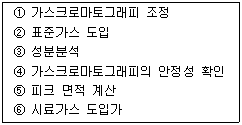
- ①－④－②－⑥－③－⑤
- ①－②－③－④－⑤－⑥
- ④－①－⑥－②－③－⑤
- ①－②－④－③－⑥－⑤
(정답률: 알수없음)
97. 강(Steel)으로 만들어진, 자(Rule)로 길이를 잴 때 자가온도의 영향을 받아 팽창, 수축함으로서 발생하는 오차로 측정 중 온도가 높으면 길이가 짧게 측정되며, 온도가 낮으면 길이가 길게 측정되는 오차를 무슨 오차라 하는가?
- 과오에 의한 오차
- 측정자의 부주의로 생기는 오차
- 우연오차
- 계통적 오차
(정답률: 알수없음)
98. 경사관 압력계에서 P1 의 압력을 구하는 식은? (단, γ : 액체의 비중량, P2 : 가는 관의 압력, θ : 경사각, Ｘ : 경사각 압력계의 눈금)
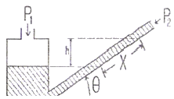
- P1 = P2/sinθ
- P1 = P2γ/cosθ
- P1 = P2 + γＸ cosθ
- P1 = P2 + γＸ sinθ
(정답률: 알수없음)
99. 물 속에 피토관을 설치하였더니 전압이 20mAq, 정압이 10mAq 이었다. 이 때의 유속은 몇 m/s 인가? (단, 피토관의 계수는 1, 중력가속도는 9.8m/s2 이다.)
- 9.8
- 10.8
- 12.4
- 14
(정답률: 알수없음)
100. 가스미터의 입구 배관에 드레인 밸브를 부착하는 가장 큰 이유는?
- 가스 유량 조절
- 압력에 의한 기기 파괴 방지
- 응결수 제거
- 압축비 유지
(정답률: 알수없음)